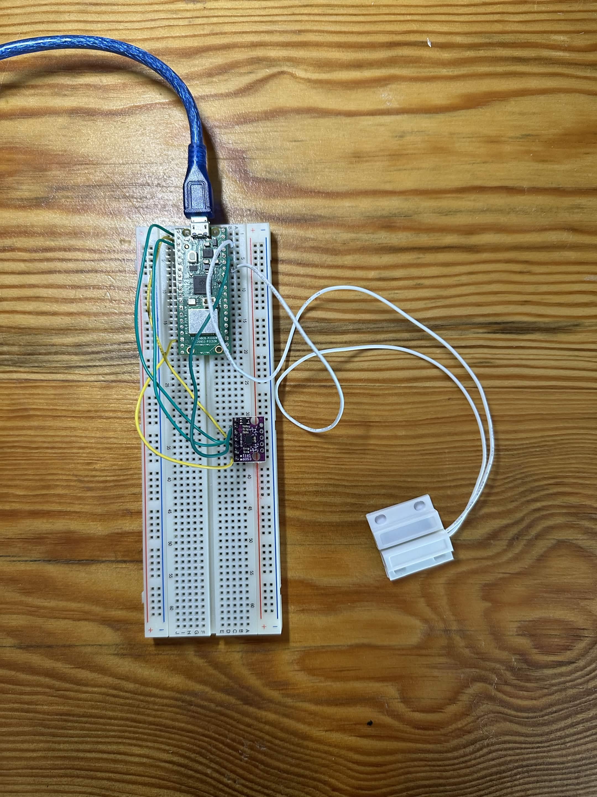
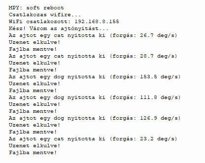
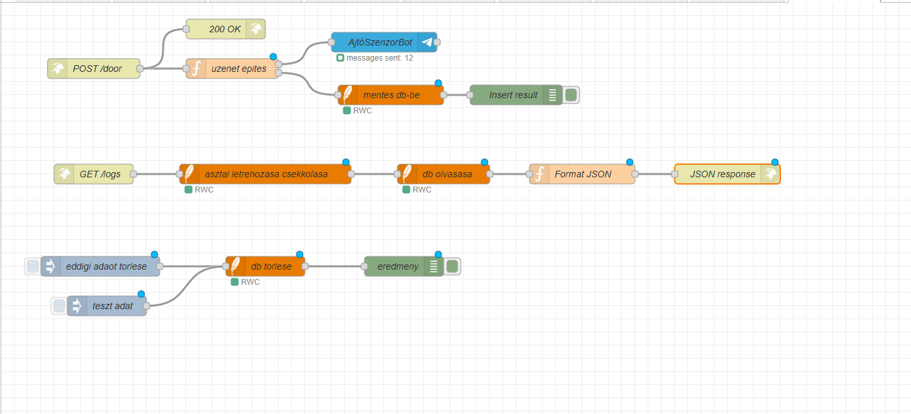
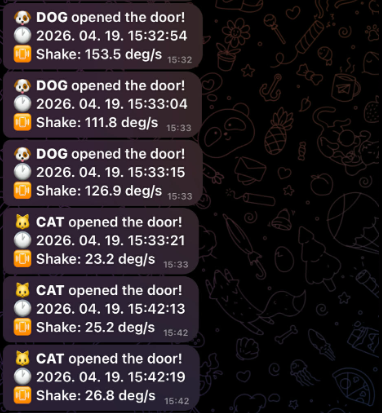

Tantárgy Áttekintése
Ebben a tantárgyban gyakorlatorientált IoT-projekteken dolgoztunk, amelyek során a következőket tanultuk és valósítottuk meg:
- Raspberry Pi Pico programozása (MicroPython/C) és egyszerű elektronikai perifériák vezérlése.
- Linux alapú virtuális szerver felállítása és alapvető rendszerszintű konfigurációk elvégzése.
- Node-RED használata vizuális adatfolyamokhoz, eszközök integrálásához és gyors prototipizáláshoz.
A tantárgy célja volt, hogy megtanuljuk az IoT-prototípusok teljes munkafolyamatát: a beágyazott eszköz programozásától a szerver- és hálózati beállításokig, valamint az adatok vizualizálásáig és egyszerű automatizálásokig.
IoT Eszközök és Megoldások
Az alábbi eszközöket és szoftveres megoldásokat használtuk és ismertük meg:
- Raspberry Pi Pico — MicroPython vagy C használata beágyazott fejlesztéshez.
- MQTT (pl. Mosquitto) — könnyű üzenetközvetítő protokoll szenzoradatok továbbításához.
- Node-RED — vizuális adatfolyam-szerkesztő integrációkhoz és dashboardokhoz.
- Szenzorok: DHT22 (hőmérséklet/páratartalom)
Ez a kombináció lehetővé teszi gyors prototípus-készítést és a valós idejű adatok egyszerű megjelenítését illetve vezérlését.
Kutya-Macska Ajtórendszer Projekt
Ebben a projektben egy intelligens ajtórendszert fejlesztettünk ki, amely egy kutya ajtóra van szerelve. A rendszer képes megkülönböztetni, hogy macska vagy kutya halad át az ajtón az ajtó elfordulási szögének mérésével. Az információt egy Telegram chatbot küldi el nekünk valós időben.
Projekt Összetevők:
- Raspberry Pi Pico: Az ajtó elfordulási szögének mérése és alapvető logika.
- Szenzor: BMI160
- Node-RED: Adatfolyam kezelése és Telegram integráció.
- Telegram Bot: Értesítések küldése az eseményekről.
Képek a Projektről:
Raspberry Pi Bekötése
A Raspberry Pi Pico hardveres bekötése az ajtó szenzoraihoz és a tápellátáshoz. Ez biztosítja az elfordulási szög mérését és az alapvető adatgyűjtést.

Thonny Konzol Print-ek
A Thonny fejlesztőkörnyezet konzol kimenete, amelyen látható a MicroPython kód futása és a szenzoradatok kiírása tesztelés közben.

Node-RED Node Layout
A Node-RED vizuális adatfolyam diagramja, ahol http-n keresztül kapjuk az adatokat és továbbítjuk a telegram chatbot extension segítségével

Értesítési Rendszer
A Telegram chatbot felületén megjelenő értesítések, amelyek jelzik, hogy macska vagy kutya haladt át az ajtón, az elfordulási szög alapján.

Kód:
Megjelenítés:
import network, urequests, time, math
from machine import Pin, I2C
WIFI_SSID = "EdilkaminWifi"
WIFI_PASSWORD = "Edilkamin01"
NODE_RED_URL = "http://192.168.8.141:1880/door"
LOG_FILE = "naplo.txt"
THRESHOLD = 100
# BMI160 beallitasok
i2c = I2C(0, sda=Pin(0), scl=Pin(1), freq=400000)
ADDR = 0x68
i2c.writeto_mem(ADDR, 0x7E, b'\x11')
time.sleep_ms(100)
i2c.writeto_mem(ADDR, 0x7E, b'\x15')
time.sleep_ms(100)
def read_gyro():
d = i2c.readfrom_mem(ADDR, 0x0E, 6)
vals = []
for i in range(0, 6, 2):
v = (d[i+1] << 8) | d[i]
if v > 32767: v -= 65536
vals.append(v / 16.4)
return math.sqrt(vals[0]**2 + vals[1]**2 + vals[2]**2)
def connect_wifi():
wlan = network.WLAN(network.STA_IF)
wlan.active(True)
wlan.connect(WIFI_SSID, WIFI_PASSWORD)
for _ in range(20):
if wlan.isconnected():
print("WiFi csatlakozott:", wlan.ifconfig()[0])
return True
time.sleep(1)
print("WiFi nem csatlakozott")
return False
def send_message(animal, rotation):
try:
urequests.post(NODE_RED_URL, json={
"animal": animal,
"magnitude": round(rotation, 1)
}, timeout=5).close()
print("Uzenet elkulve!")
except Exception as e:
print("Elkuldes nem sikerult:", e)
def save_to_file(animal, rotation):
try:
with open(LOG_FILE, "a") as f:
f.write(f"Allat: {animal}, Forgás: {round(rotation, 1)} deg/s, Ido: {time.time()}\n")
print("Fajlba mentve!")
except Exception as e:
print("Fajlba iras nem sikerult:", e)
print("Csatlakozas wifire...")
connect_wifi()
reed = Pin(28, Pin.IN, Pin.PULL_UP)
last_trigger = 0
print("Kész! Várom az ajtónyitást...")
while True:
if reed.value() == 0 and (time.time() - last_trigger) > 5:
last_trigger = time.time()
peak = 0
for _ in range(20):
s = read_gyro()
if s > peak:
peak = s
time.sleep_ms(20)
animal = "dog" if peak > THRESHOLD else "cat"
print(f"Az ajtot egy {animal} nyitotta ki (forgás: {peak:.1f} deg/s)")
send_message(animal, peak)
save_to_file(animal, peak)
while reed.value() == 0:
time.sleep_ms(50)
time.sleep_ms(10)